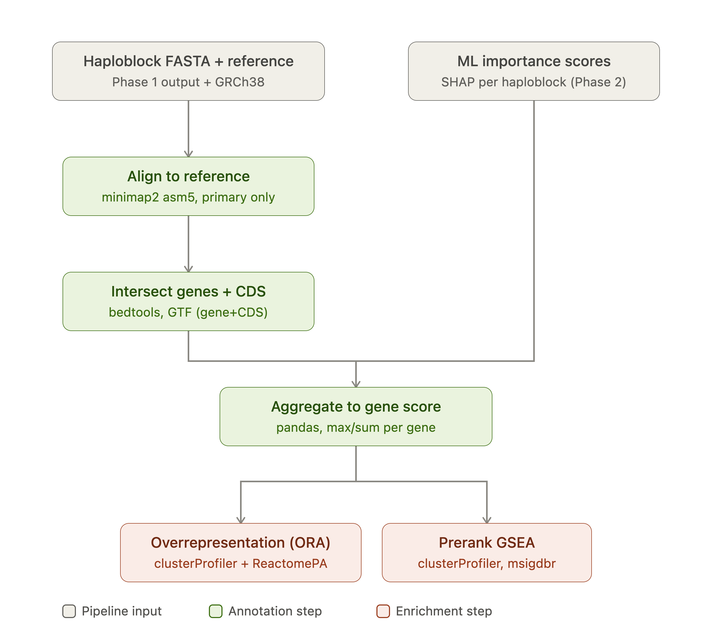
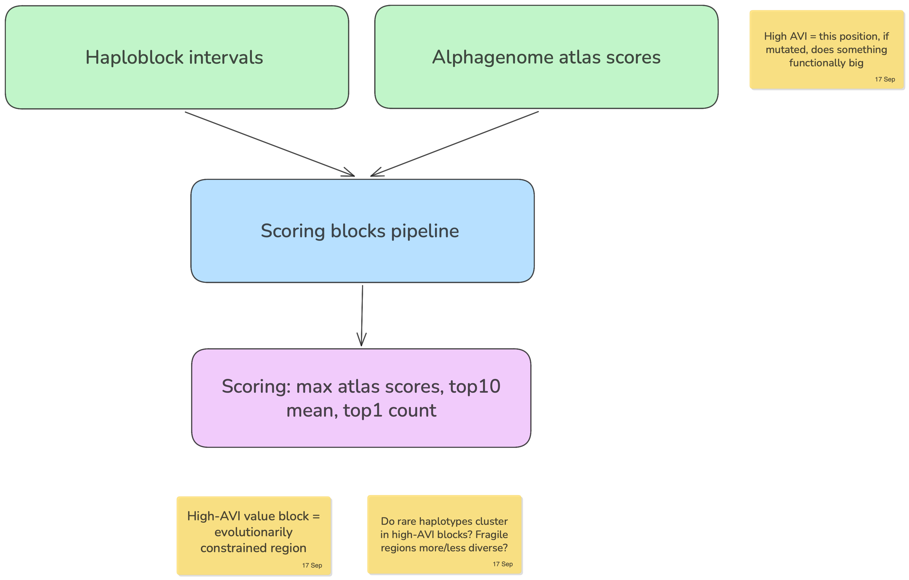

HaploHash
Haploblock-level functional annotation + privacy-preserving genomic hashes. 16–18 Sep 2026.
39,141 haploblocks (hg38) + AlphaGenome Atlas | gnomAD
\ /
\___ aggregate to block __/ top-1% statistic
|
annotated haploblocks
/ \
haplograph 64-bit hash
nodes / edges / islands S|CH:ROM|HAPLO|CLUSTER|VAR
lift-weighted re-identification attack


The problem
Genomic data sharing sits on a tension: block-level haplotype structure carries strong functional signal (regulatory activity, constraint, burden), but that same structure is exactly what makes individuals re-identifiable across datasets. Existing mitigations either strip out the functional signal (allele-frequency scrubbing) or leave the haplotype structure intact and exploitable. There’s no compact representation that keeps the former while resisting the latter.
The idea
Treat each of the 39,141 hg38 haploblocks as the unit of both annotation and encoding:
- Annotate every block with functional scores (AlphaGenome Atlas activity, gnomAD constraint) aggregated with a top-1% statistic, so the signal reflects the most extreme regulatory/constraint element in the block rather than a diluted mean.
- Encode each annotated block into a 64-bit hash (
S|CHROM|HAPLO|CLUSTER|VAR) that represents haplotype identity without exposing raw variant-level data. - Attack the hash scheme ourselves — treat re-identification as the adversarial baseline the encoding has to survive, not an afterthought.
Scientific question
Can block-level functional annotation (AlphaGenome Atlas + gnomAD) predict effect sizes at the haplotype level, and can a compact 64-bit hash encode enough haplotype signal for downstream analysis (burden/SKAT/ACAT) while remaining resistant to re-identification attacks?
How it works
Features per block
| Feature | Source | Note |
|---|---|---|
avi_max, avi_top10_mean |
Atlas AVI, Tabix | strongest possible alternate alleles in the block |
avi_top1_count, avi_top1_fraction |
Atlas AVI, Tabix | number/fraction of alleles with PHRED >= 20 |
avi_top1_per_kb |
Atlas AVI, Tabix | top-1% allele density, adjusted for block length |
rnaseq_abs |
Atlas raw, API | signed — keep sum and abs |
gnocchi_mean |
gnomAD non-coding | positional, 1 kb |
loeuf_min |
gnomAD constraint | gene-joined; no gene = NA, not 0 |
| covariates | length, SNV density, coding fraction, genes |
Circular, excluded: PhastCons, Cactus, allele frequency (AVI inputs); recombination rate (defines blocks).
Data: 1000G — 2,548 individuals, 26 populations, data.haploblocks.org. hg38, SNVs only. UKB pending.
How to use it
The end-to-end pipeline is not ready yet. What exists so far:
annotate_atlas/
- Scrapes haploblock intervals from
data.haploblocks.orginto a sorted, overlap-checkedblocks.bed(39,074 blocks recovered vs. 39,141 expected, hg38). score_blocks.pytabix-queries the AlphaGenome Atlas AVI PHRED scores per block, writingblock_scores.tsv(n_snv,avi_top1,avi_dens,length_kb; PHRED ≥ 20, pooled, unsigned).- TODO: AVI column indices need confirming against the real file once cluster VM access lands.
Downstream steps (haplograph construction, hash encoding, attack simulation, effect-size modeling) are being built in parallel by the tracks below and are not yet wired together.
Findings
To be filled in as tracks report results.
Team
| Who | Track |
|---|---|
| Mauricio Moldes | block filtering, gene counts |
| Alejandra Caballero, Mina | annotation databases, pruning |
| Markus Marandi | AlphaGenome atlas |
| Robert Campbell, David Bonet | effect sizes (burden / SKAT / ACAT) |
| Aditya Kumar Karna | encoding, hashing, hash attack |
Data
1000G — 2,548 individuals, 26 populations, data.haploblocks.org. hg38, SNVs only. UKB pending.
annotate_atlas/
Scrapes haploblock intervals from data.haploblocks.org into a sorted, overlap-checked blocks.bed (39,074 blocks, hg38, vs ~39,141 expected). score_blocks.py streams the AlphaGenome Atlas AVI Tabix download across those intervals and writes one row per block. It validates the real file header or requires explicit column numbers; it does not silently assume that the last column is AVI PHRED.
Inspect the downloaded file first:
python3 annotate_atlas/score_blocks.py \
annotate_atlas/blocks.bed /path/to/avi.tsv.gz --inspectIf the header identifies the AVI PHRED column, run:
python3 annotate_atlas/score_blocks.py \
annotate_atlas/blocks.bed /path/to/avi.tsv.gz \
annotate_atlas/block_scores.tsvFor a headerless file, pass 1-based column numbers reported by --inspect:
python3 annotate_atlas/score_blocks.py \
annotate_atlas/blocks.bed /path/to/avi.tsv.gz \
annotate_atlas/block_scores.tsv \
--chrom-column 1 --position-column 2 --phred-column 6The full static SNV Atlas contains roughly nine billion alternate alleles, so the genome-wide run belongs on the cluster and should read the local download, not the API.
From variant scores to haploblocks
There are two different outputs. Keep them separate.
1. Static block annotation
For block h, let V_h be every possible Atlas alternate allele whose hg38 position lies in the half-open block interval. score_blocks.py calculates:
avi_max(h) = max(q_v)
avi_top10_mean(h) = mean(10 largest q_v)
avi_top1_count(h) = sum(1[q_v >= 20])
avi_top1_fraction(h) = avi_top1_count / number of scored alleles
avi_top1_per_kb(h) = avi_top1_count / block length in kbHere q_v is AVI PHRED. PHRED 20 is the Atlas genome-wide top 1%. AVI is an unsigned prioritisation rank that mixes AlphaGenome predictions with conservation and coding features. A sum or mean of all AVI PHRED values is therefore not a signed block effect. The static annotation measures a block’s functional opportunity: how many potentially important substitutions the interval contains.
2. Observed haplotype or cluster annotation
To annotate the genomic hashes, use only alleles carried by that phased haplotype:
phased 1000G VCF
-> split and left-normalise multiallelic records on hg38
-> join each ALT by (chromosome, position, ALT) to Atlas
-> assign the allele to one BED haploblock
-> group by (sample, haplotype, block_id)
-> join the existing haplotype-cluster IDUseful per-haplotype features are carried_avi_max, carried_top1_count, and carried_top1_fraction. At cluster level, report the median member value and the fraction of cluster members carrying at least one PHRED >= 20 allele. Do not copy the static block score onto every cluster and call it a genotype effect: that loses the individual’s allele state.
Direction and interactions
AVI cannot say whether a haplotype increases or decreases expression. For a phenotype-specific analysis, query non-active, signed Atlas modalities (for example RNA-seq, CAGE or accessibility), select the relevant tissues and genes, take the maximum absolute score across the selected tracks for filtering, and retain the original sign for burden models. This follows the Atlas paper’s aggregate-testing design.
The precomputed Atlas rows score one variant at a time. Summing carried single-variant scores assumes no within-block interaction. For selected blocks shorter than AlphaGenome’s 1 Mb input, score the complete phased sequence with the AlphaGenome haplotype workflow and compare it with the single-variant results:
non_additivity(h) = score(combined haplotype) - sum(score(single variants))That combined prediction is a second-stage analysis, not something recoverable from the AVI download alone.